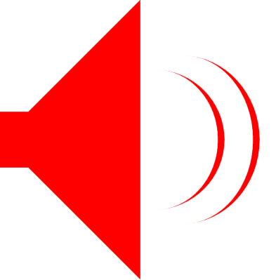

Stan's Audio Stuff

Stereo Amplifier.
Bluetooth BoxAmp.
Speakers.
The first pair of speakers I made...
This is the second pair.
(This link opens in a new window).
Building
The Overnight Sensations
, designed by
Paul Carmody
: